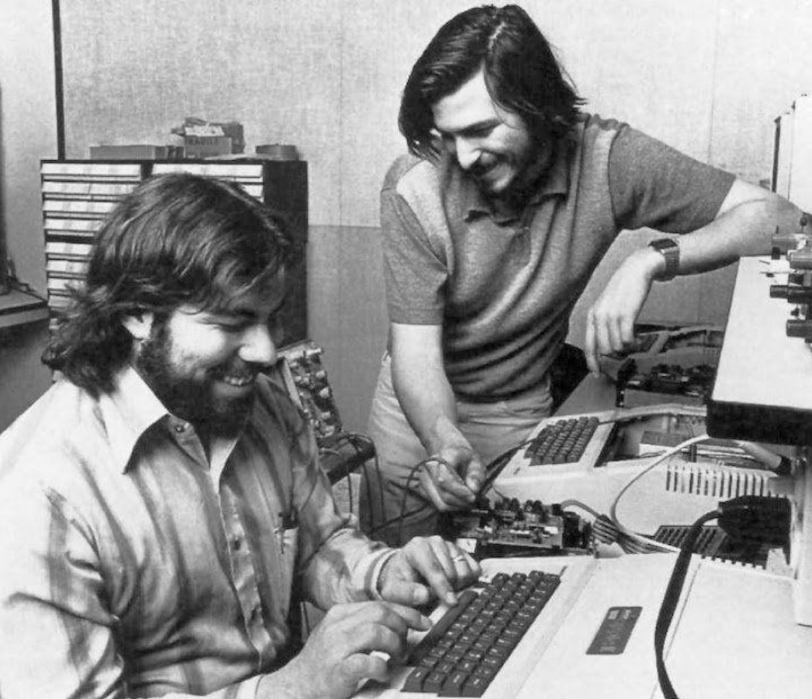

Startup orqali birinchi million
G‘oyadan birinchi pulgacha: dunyo tajribasi, raqamlar va sizning birinchi qadamingiz
Shanba, 10-oktabr · 12:30–14:30
Shahzod Sobirov · DATA asoschisi
2 soat, 5 bekat
Takrorlash va g‘oliblar
Stiv Jobs: 5 savol. Atari topshirig‘i: ovoz berish va 3 ta kitob
Startup nima?
Tarixi, Silikon vodiysi, mashhur startuplar va asoschilar, statistika, yosh chegarasi
Birinchi million
30 yoshgacha milliarderlar, million kalkulyatori, muvaffaqiyat formulasi
G‘oya, MVP, birinchi pul
Birinchi mahsulot va birinchi mijoz. Uzum va DATA tajribasi: Durbin
AI zamoni va topshiriq
Maktabda o‘qib turib dunyoga chiqqanlar. G‘oya kartasi
Nega hamma startup qilmaydi, agar u eng tez yo‘l bo‘lsa?
Stiv Jobs: boshqacha fikrlagan inson
Garaj, haydalish, qaytish va 7 qoida. Eslaymizmi?
Garaj: ikki Stiv, taxminan 1 300 dollar va 50 ta kompyuterga birinchi buyurtma
30 yoshida o‘z kompaniyasidan haydaldi. NeXT va Pixar’ni qurdi
Bankrotlik yoqasidagi Apple’ga qaytdi: o‘nlab mahsulotdan 4 tasi qoldi
iPhone: pleyer, telefon va internet bitta qurilmada
Oddiylik · Fokus · Sifat · Jamoa · Mijoz · Chorraha · Pul emas, mahsulot

Kim birinchi aytadi?
Apple’ga qaysi yili va qayerda asos solingan?
1976-yil, garajda
Breakout o‘yinini 4 kechada kim loyihalagan?
Stiv Voznyak
Jobs 1997-yilda Apple mahsulotlarini nechta qilib qisqartirgan?
4 ta: 2 × 2 jadval
Kalligrafiya darsi 10 yildan keyin qayerda “ishga tushdi”?
Macintosh shriftlarida (1984)
Stenford nutqining so‘nggi 4 so‘zi?
“Och bo‘l. Nodon bo‘l.”
Fokus nima, Jobsning ta’rifi bo‘yicha?
“Yo‘q” deyish
Sizning o‘yin g‘oyalaringiz
Yuklanmoqda...
Har jamoa o‘yinini Jobs uslubida taqdim qiladi
Hamma telefondan bitta ovoz beradi. O‘z jamoangizga ovoz bermang!
Ovoz berish:
Uchta kitob, uchta g‘olib
—
—
—
Natija o‘quvchilar ovozi bilan aniqlanadi. Ovozlar teng bo‘lsa, jamoalar 30 soniyalik qo‘shimcha taqdimot qiladi.
Garajdan milliongacha: 4 yil
Garaj. Kapital: mikroavtobus va kalkulyator puli, taxminan 1 300 $
Birinchi buyurtma: Byte Shop do‘koni. 25 000 $ tushum
Apple II chiqdi. Investor Mayk Markkula 250 000 $ olib keldi
Apple birjaga chiqdi. 25 yoshli Jobs boyligi 200 mln dollardan oshdi
Bu oddiy biznes emas edi. Bu startup edi. Bugun shu so‘zni ochamiz.
Startup nima va u qanday paydo bo‘lgan?
Startup — tez o‘sish uchun yaratilgan kompaniya
Choyxona
Mahalladagi 50 kishiga xizmat qiladi. Yaxshi daromad, barqaror. 10 yildan keyin ham 1–2 ta filial.
Ovqat yetkazish ilovasi
Bugun 1 shahar, ertaga butun mamlakat. Har oy 2 baravar o‘sishga harakat qiladi. Hali foyda yo‘q bo‘lishi mumkin.
“Startup — tez o‘sish uchun yaratilgan kompaniya.”
Pol Grem, Y Combinator asoschisi, 2012
“Startup — takrorlanadigan va kengayadigan biznes modelini izlayotgan vaqtinchalik tashkilot.”
Stiv Blank
Startup = Muammo + Yangi yechim + Tez o‘sish + Kichik jamoa
Ko‘p odamning muammosi
Millionlab odamni qiynaydigan narsa
Yangi yechim
Odatda texnologiya orqali: ilova, sayt, AI
Kengayadi
10 mijozdan 1 million mijozga xarajat deyarli oshmaydi
Noaniqlik
Ishlashi aniq emas. Shuning uchun xavfli, lekin katta yutuq beradi
“Startap qilish uchun g‘oya va jamoa bo‘lsa bo‘ldi.” POST #567
Startup qanday paydo bo‘lgan?
HP garaji
Palo-Alto. Xyulett va Pakkard 538 $ bilan boshladi. “Silikon vodiysining tug‘ilgan joyi”
Venchur kapital
ARDC: xavfli yangi kompaniyalarga pul tikadigan birinchi fond
“Sotqin sakkizlik”
8 muhandis ishdan ketib, Fairchild’ni qurdi. Undan yuzlab kompaniya, jumladan Intel chiqdi
Apple
Garajdan dunyoning eng qimmat kompaniyasigacha
Internet buumi
“Dot-com”: minglab internet startuplar. Ko‘pi yopildi, Amazon va Google qoldi
Y Combinator
Startuplar “maktabi”: Airbnb, Dropbox, Stripe shu yerdan chiqdi
App Store
Har kim telefon uchun ilova yasab, butun dunyoga sota oladigan bo‘ldi
ChatGPT
AI davri boshlandi: endi bitta odam ham kompaniya qura oladi
Silikon vodiysi qayerda?
AQSH, Kaliforniya shtati. San-Fransisko ko‘rfazining janubidagi vodiy: Palo-Alto, Mauntin-Vyu, Kupertino, Menlo-Park, San-Xose
“Silikon” — kremniy. Kompyuter chiplari kremniydan yasaladi, 1960–70-yillarda chip zavodlari shu yerda to‘plangan. 1971-yilda jurnalist Don Xefler shunday atagan
Apple (Kupertino), Google (Mauntin-Vyu), Meta (Menlo-Park), Nvidia va Intel (Santa-Klara), OpenAI (San-Fransisko)
Startup uchun 5 ta “o‘g‘it”
Universitetlar
Stenford va Berkli har yili minglab muhandis va g‘oya yetkazib beradi
Pul yonma-yon
Sand-Xill yo‘lida yuzlab venchur fond. Investor bilan bir kofe masofasida
Zanjir reaksiya
Fairchild’dan Intel, Intel’dan yangi kompaniyalar. Muvaffaqiyatli asoschi keyingisiga investor bo‘ladi
Yiqilishdan qo‘rqmaslik
Yopilgan startup — uyat emas, tajriba. Ertasi kuni yangisini boshlaysan
Iste’dodlar oqimi
Butun dunyodan eng kuchli dasturchilar va muhandislar shu yerga keladi
~57%
2024-yilda AQSH venchur pulining yarmidan ko‘pi (~90 mlrd $) shu hudud startuplariga ketdi (Crunchbase)
Mashhur oliygohlar
Stenford universiteti
Bitiruvchilari asos solgan: Google, HP, Yahoo, Instagram, Snapchat, Nvidia (Jensen Xuang magistraturasi), Netflix. Stenforddan chiqqanlar 40 000 dan ortiq kompaniya ochgan, ularda 5 mln dan ortiq odam ishlaydi
Kaliforniya universiteti, Berkli
Stiv Voznyak shu yerda o‘qigan. Intel asoschisi Gordon Mur va yuzlab texnologik asoschilar bitiruvchisi
San-Xose shtat universiteti va Santa-Klara universiteti
Vodiy kompaniyalariga eng ko‘p muhandis yetkazib beradigan oliygohlar
Jobs universitetni tashlagan, lekin Stenfordda tarixiy nutq so‘zlagan. Oliygoh — kafolat emas, muhit.
Aniq son yo‘q, lekin piramida bor
Manbalar: Mind the Bridge va Crunchbase (scaleup); Hurun 2025 — 1 523, CB Insights — ~1 300–1 400 unicorn. “Startup” har kim har xil hisoblagani uchun umumiy son turlicha.
Piramidaning tepasi tor. Lekin u yerga chiqqanlarning hammasi pastdan, bitta g‘oyadan boshlagan.
Zamonaviy dunyoning eng mashhur startuplari
2 nafar Stenford talabasi. Ijaraga olingan garajda boshlangan
19 yoshli Mark Sukerberg, Garvard yotoqxonasidan
Airbnb
Ijara pulini to‘lash uchun xonadagi havo matraslarini ijaraga berishdi
2 yildan keyin 1 mlrd dollarga sotildi. Jamoada atigi 13 kishi bor edi
Zamonaviy dunyoning eng mashhur startuplari
2014-yilda 19 mlrd dollarga sotildi
Telegram
Pavel va Nikolay Durovlar. 2025-yilda 1 mlrd foydalanuvchi
OpenAI
ChatGPT 2 oyda 100 mln foydalanuvchiga yetdi: tarixdagi rekord
Canva
G‘oya 19 yoshli talaba Melani Perkinsdan. Investorlar 100 martadan ko‘p “yo‘q” degan
Ular ham sizdek boshlagan
Bill Geyts
19 yoshida Garvardni tashlab, do‘sti bilan Microsoft’ni ochdi (1975)
Mark Sukerberg
19 yoshida yotoqxonada. 23 yoshida eng yosh milliarder
Ilon Mask
12 yoshida Blastar o‘yinini yozib, 500 dollarga sotgan
Melani Perkins
Talabalarga dizayn darsi berib yurganda g‘oya topdi
Jensen Xuang
1993-yilda kafe stolida reja tuzdi. Bugun AI chiplarining asosiy ishlab chiqaruvchisi
Sem Altman
19 yoshida birinchi startupi Loopt’ni ochgan. Bugun ChatGPT ortida
Startup dunyosi statistikasi
startup oxir-oqibat yopiladi
Startup Genome, taxminiy
“yagona shox” (unicorn): qiymati 1 mlrd dollardan oshgan startup
CB Insights, 2026. Boshqa hisoblarda 1 800 dan ortiq
2025-yilda startuplarga kiritilgan venchur investitsiya (+30%)
Crunchbase
shu pulning qariyb yarmi AI startuplarga ketdi. 2024-yilda uchdan biri edi
Ya’ni har 10 ta startupdan 9 tasi yopiladi. Lekin qolgan 1 tasi dunyoni o‘zgartiradi.
9 tasi nega yiqiladi?
CB Insights: 111 ta yopilgan startup asoschilari aytgan sabablar, 2021. Bir startupda bir nechta sabab bo‘lishi mumkin.
Eng katta sabab: hech kimga kerak bo‘lmagan narsani yasash. Shuning uchun avval muammo, keyin mahsulot.
Startup yo‘nalishlari
🤖 AI
Sun’iy intellekt yordamchilari, agentlar
💳 Fintech
To‘lov, bank, hamyon: Payme, Click
🎓 Edtech
Ta’lim: Duolingo, Khan Academy
🛒 E-commerce
Onlayn savdo: Amazon, Uzum
🩺 Healthtech
Sog‘liq: onlayn shifokor, fitnes ilovalari
🎮 Gaming
O‘yinlar: Roblox, Minecraft
🚕 Transport va yetkazish
Uber, Yandex Go, Express24
🌱 Klimat va agro
Toza energiya, aqlli dehqonchilik
Savol: sizning qiziqishingiz qaysi biriga yaqin? 3 kishi aytadi.
G‘oyaga yosh chegarasi yo‘q. Hujjatga bor.
G‘oya, MVP, birinchi mijoz
Istalgan yoshda. Mikaila Ulmer 4 yoshida limonad biznesini boshlagan
Ota-ona roziligi bilan
16 yoshdan tadbirkorlik qilsa, ota-ona roziligi bilan to‘liq muomalaga layoqatli deb topilishi mumkin (Fuqarolik kodeksi, 28-modda)
To‘liq mustaqil
Kompaniya ochish, shartnoma imzolash, investor bilan ishlash
O‘quvchilar o‘rtasida “Eng yaxshi startap g‘oyasi” tanlovi: g‘oliblarga 10 mln so‘mgacha mukofot. Hududlarda hokimlar rahbarligida “Startaplar klubi”. Har yili “Yosh tadbirkorlar” chempionati.
Birinchi million
Kim, qayerda va qancha vaqtda topdi?
Dunyoning eng yosh boylari
Mercor asoschilari
Brendan Fudi, Adarsh Xiremat, Surya Midha. Maktabdagi debat do‘stlari. Kompaniya 10 mlrd $ baholandi: tarixdagi eng yosh o‘zi topgan milliarderlar
Shayn Koplan
21 yoshida universitetni tashlab boshladi. Kompaniya ~9 mlrd $ baholandi
Aleksandr Vang
AI uchun ma’lumot tayyorlaydi. 2025-yilda Meta kompaniyaning 49% ini 14,3 mlrd $ ga oldi
Cursor asoschilari
MIT’dagi 4 do‘st, 2022. Dasturchilar uchun AI muharrir. 2026-yilda SpaceX 60 mlrd $ ga sotib olishga kelishdi
Mark Sukerberg
O‘z davrida eng yosh o‘zi topgan milliarder. 17 yil o‘tib rekordni AI startuperlar buzdi
30 yoshgacha 35 milliarder
Ulardan 12 tasi boylikni o‘zi topgan. O‘zi topganlarning ko‘pchiligi — AI startup asoschilari. Qolganlari meros olgan.
1 000 000 $ ga uchta yo‘l
Oyiga 1 000 $
Hammasini yig‘sangiz ham, birorta tiyin sarflamasdan
Oyiga 5 000 $ foyda
Yaxshi do‘kon yoki o‘quv markazi
Har oy 2 baravar o‘sish
Yoki 0. Startup — eng tez, lekin eng xavfli yo‘l
Sir — kengayish: ilova 10 kishiga ham, 10 million kishiga ham bir xil kod bilan ishlaydi. Choyxona esa har bir mijoz uchun yangi stul so‘raydi.
Siz millionga qachon yetasiz?
Bu tushum, foyda emas: xarajatlar hali ayrilmagan. 50 yildan ko‘p chiqsa, “50+ yil” deb ko‘rsatiladi.
Eng muhim omil: vaqt
Bill Gross 200 ta kompaniyani o‘rganib, muvaffaqiyatga nima ko‘proq ta’sir qilganini o‘lchadi (TED, 2015).
Misol: Airbnb 2008-yil inqirozida chiqdi: odamlarga qo‘shimcha pul kerak edi. 5 yil oldin bunday g‘oya “begona uyda yotish” deb kulgi bo‘lardi.
7 ta qoida
Muammoni seving
G‘oyani emas. G‘oya o‘zgaradi, muammo qoladi
Odamlar bilan gaplashing
Yasashdan oldin 20 kishidan so‘rang
Kichik boshlang
Avval bitta sinf, keyin maktab, keyin shahar
Tez qiling
Mukammal emas, ishlaydigan versiya bir haftada
Jamoa
Jobs + Voznyak: biri sotadi, biri yasaydi
Raqamlarni kuzating
Nechta odam qaytib keldi? Nechta to‘ladi?
Taslim bo‘lmang
Canva 100 dan ortiq “yo‘q” eshitgan
Jobsdan
“Muvaffaqiyatli tadbirkorni muvaffaqiyatsizidan ajratib turadigan narsaning yarmi — sabr-toqat.”
G‘oya, MVP va birinchi pul
Eng yaxshi g‘oya — sizni jahlingizni chiqaradigan narsa
Nega maktab oshxonasida navbat 15 daqiqa? Nega uy vazifasini topish qiyin?
Qani edi repetitorni 1 daqiqada topsam. Qani edi kiyimimni sotib, yangisini olsam.
Siz yaxshi biladigan narsa: o‘yin, sport, rasm, dasturlash, til.
“Odamlar nima xohlashini siz ko‘rsatmaguningizcha bilishmaydi.” Stiv Jobs
Mashina emas, avval skeytbord
Sayt + 3 ta havo matrasi o‘z kvartirasida. Birinchi 3 mehmon
Mahsulot yo‘q, faqat 3 daqiqalik video. Bir kechada kutish ro‘yxati 5 000 dan 75 000 ga oshdi
Do‘kondagi poyabzallarni suratga olib, saytga qo‘ydi. Buyurtma kelsa, borib sotib olib yuborardi
Telegram kanal, bot, Google Forma yoki AI bilan 1 kunda sayt
Bir haftada g‘oyani tekshirish
Muammo
Bitta jumla: “... odamlar ... dan qiynaladi”
10 suhbat
10 kishidan so‘rang: rostdan qiynalasizmi? Hozir nima qilyapsiz?
Eng kichik yechim
Kanal, bot, forma, Canva sahifa yoki AI sayt
Birinchi foydalanuvchilar
Sinfdoshlar, oila, mahalla. Kim qaytib keldi?
Pul so‘rang
Kimdir 5 000 so‘m to‘lasa, demak g‘oya tirik
Maqsad — chiroyli mahsulot emas. Maqsad — odamlarga kerakmi, yo‘qmi, tez bilish.
Eng yaxshi investor — birinchi mijoz
Apple, 1976
Byte Shop 50 ta kompyuter buyurtma qildi. Detallar shu buyurtma ishonchiga qarzga olindi
Airbnb, 2008
Pul tugadi. Asoschilar “Obama O’s” nonushta yormasini chiroyli qutiga solib sotdi
Microsoft, 1975
19 yoshli Geyts va Allen Altair kompyuteri uchun dastur sotdi: 3 000 $ va har nusxadan ulush
Birinchi mijozlar — eng toza pul: hech kimga ulush bermaysiz
O‘z jamg‘armangiz, oila va do‘stlar — kichik, lekin tez
Tanlov va grantlar — O‘zbekistonda o‘quvchilar uchun ham bor (PQ-59)
Investor — pul beradi, evaziga kompaniyaning bir qismini oladi
Uzum: O‘zbekistonning birinchi “yagona shox”i
Djasur Djumayev va jamoasi Uzum’ga asos soldi. Oktabrda Uzum Market ishga tushdi
Mart: qiymati 1,16 mlrd $. O‘zbekistonning birinchi unicorn’i — atigi 1,5 yilda
Tencent va VR Capital 65,5 mln $ kiritdi. Qiymati ~1,5 mlrd $
2019-yilda 10,8 mln $ baholangan, 2023-yilda 113,6 mln $: 4 yilda 10 baravar
Akmal Paiziyev: Yarmarka.uz, MyTaxi, Express24. Ba’zi loyihalari yopildi, lekin har biri keyingisiga dars bo‘ldi. 2025-yilda San-Fransiskoda AI startup ochdi.
DATA filial ochmaydi. Tizimni ko‘paytiradi.
Har yangi maktab uchun
Yangi bino, ta’mir, 20+ xodim, katta pul va yillar. 10 ta filial — 10 baravar ko‘p muammo.
Bir marta yaratib, hammaga berish
DATA yillar davomida maktab boshqaruvini tartibga keltirdi. Shu tajribani dasturga aylantirdik: Durbin. Endi istalgan xususiy maktab uni obuna orqali ishlatadi.
Xususiy maktablar uchun operatsion tizim
Maktabda ta’lim, moliya, qabul va ota-ona aloqasi 5–6 ta alohida vositada: Excel, Telegram, alohida CRM. Kassadagi pul “foyda” deb hisoblanadi
Bitta tizim: CRM, LMS, ERP, BI, SOP, AI va ota-onalar ilovasi. Marketingdan bitiruvgacha
O‘zbekistonda 551 ta nodavlat maktab, ~130 000 o‘quvchi. 8 yilda o‘quvchilar ~10 baravar ko‘paygan
har bir o‘quvchi uchun oyiga, obuna
ishlatyapti
har oy
8 maktabdan 250 maktabga
100 000 $ oylik tushum = yiliga 1,2 mln $. Birinchi million shu.
8 ta maktab ham, 250 ta maktab ham bitta dasturda ishlaydi. Bu — kengayish.
Sizningcha, Durbin’ni AI ko‘chira oladimi? Uni nima himoya qiladi?
Reja raqamlari Durbin investor taqdimotidan. Bu maqsad, kafolat emas.
Sun’iy intellekt zamonida startup
Dastur yozish endi ixtiro emas. Unda nima qoladi?
Oldin va hozir
Ilova yasash uchun
5–10 dasturchi · 6–12 oy · yuz minglab dollar
Ilova yasash uchun
1 kishi + AI · 1 hafta yoki 1 kun · oyiga 20 dollarlik obuna
Base44
Maor Shlomo yolg‘iz, investorsiz, 6 oyda qurdi. 2025-yilda Wix 80 mln $ ga sotib oldi
Lovable
AI bilan sayt yasash xizmati. Ishga tushgandan 8 oyda yillik tushum 100 mln $
Midjourney
AI rasm. Investorsiz, yiliga ~200 mln $ tushum (2023, taxmin)
“Bitta odamdan iborat milliard dollarlik kompaniya qachon paydo bo‘lishiga do‘stlar bilan garov o‘ynayapmiz. AI’siz buni tasavvur qilib bo‘lmasdi, endi bu albatta bo‘ladi.”
AI ko‘chira olmaydigan 6 narsa
Muammoni chuqur bilish
Siz o‘sha muammo ichida yashaysiz. Masalan, maktab hayoti
Ishonch va brend
Odamlar sizni tanisa, ko‘chirmaga emas, sizga keladi
Auditoriya
1 000 obunachili kanal — eng kuchli start
Hamjamiyat
Foydalanuvchilar bir-biriga bog‘lansa, ketmaydi
Tezlik
Ko‘chirguncha siz 3 qadam oldinda
Oflayn dunyo
Yetkazish, xizmat, odam bilan ishlash: buni kod qilib bo‘lmaydi
Kod — endi arzon. Qimmat narsa: odamlar, ishonch va tezlik.
Maktabda o‘qib turib dunyoga chiqqan 4 startuper
Nik D’Aloizio
15 yoshida yotoqxonasida yangiliklarni qisqartiradigan ilova yozdi. 17 yoshida Yahoo ~30 mln $ ga sotib oldi
Zak Yadegari
Maktabda o‘qib turib ovqat suratidan kaloriya sanaydigan AI ilova qildi. 2-oyda 115 000 $, keyin yiliga 30 mln $ dan ortiq
Pranjali Avasti
15–16 yoshida olimlar uchun AI qidiruv yaratdi. 450 000 $ investitsiya oldi
Mikaila Ulmer
4 yoshida buvisining retsepti bilan limonad sotdi. Shark Tank’da 60 000 $ oldi, bugun 600+ do‘konda
Ularning hech biri “katta bo‘lganimda” deb kutmagan.
Bugungi 3 saboq
Startup — tez o‘sish uchun. 10 tadan 9 tasi yiqiladi, shuning uchun kichik va tez boshla.
Avval muammo va odamlar. Keyin MVP. Keyin birinchi pul.
AI davrida kod arzon. Ishonch, auditoriya va tezlik qimmat.
Startup g‘oya kartasi
Bir hafta davomida atrofingizdagi muammolarni kuzating. Eng yaxshisini tanlang va g‘oya kartasini to‘ldiring.
Muammo: kim, nimadan qiynaladi?
Mijoz: aynan kim? Nechta odam?
Yechim: bitta jumlada
Pul: kim, qancha va nega to‘laydi?
MVP: 1 haftada nima yasay olasiz?
Bonus: 10 kishidan so‘rab, javoblarini yozing
Muddat: keyingi shanba, 17-oktabr. Eng kuchli g‘oyalar keyingi darsda ekranda va “Eng yaxshi startap g‘oyasi” tanloviga tayyorlanadi.
Skanerlang yoki oching:
Sen ham
uddalaysan.
“Nuqtalarni faqat orqaga qarab birlashtira olasiz.” · Stiv Jobs
DATA · Bilimga to‘ldiramiz